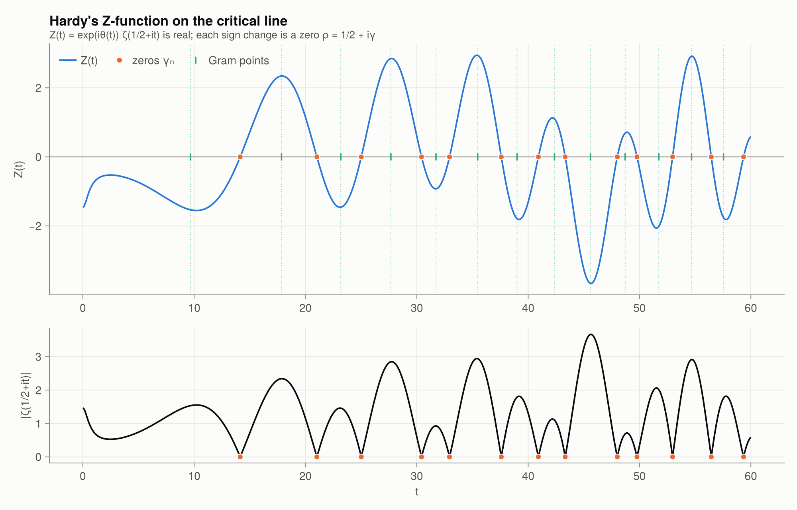
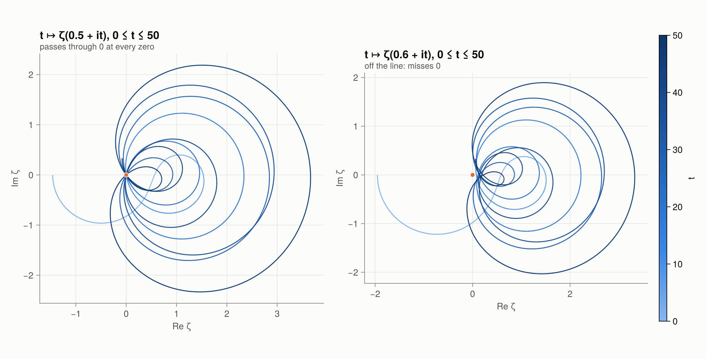
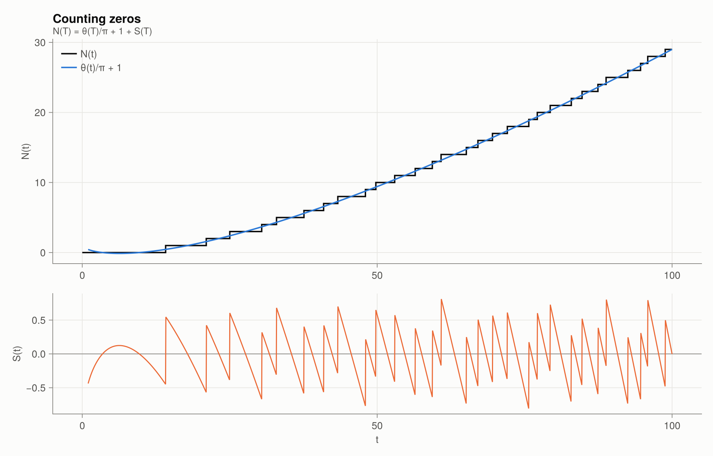

5 · Nontrivial zeros
The critical strip
The nontrivial zeros $\rho = \beta + i\gamma$ all lie in $0 < \beta < 1$:
- The Euler product rules out $\beta > 1$.
- Hadamard and de la Vallée Poussin (1896) ruled out $\beta = 1$. This fact is the Prime Number Theorem.
- The functional equation reflects $\beta < 0$ to $\beta > 1$.
They are symmetric under $\rho \mapsto 1 - \rho$ and under $\rho \mapsto \bar\rho$. A zero off the critical line would therefore come with three partners, $\bar\rho$, $1-\rho$ and $1-\bar\rho$.
γ = nontrivial_zeros(10)10-element Vector{Float64}:
14.134725141734695
21.02203963877155
25.010857580145686
30.42487612585952
32.935061587739185
37.586178158825675
40.9187190121475
43.327073280915
48.005150881167154
49.77383247767231γ .- collect(KNOWN_ZEROS) # agreement with Odlyzko's tables10-element Vector{Float64}:
0.0
-7.105427357601002e-15
-3.552713678800501e-15
7.105427357601002e-15
-7.105427357601002e-15
0.0
0.0
0.0
-7.105427357601002e-15
7.105427357601002e-15Hardy's Z-function
How can a computation prove that a zero lies exactly on the line? Define the Riemann–Siegel theta function and Hardy's $Z$:
\[\theta(t) = \arg\Gamma\!\left(\tfrac14 + \tfrac{it}{2}\right) - \frac{t}{2}\log\pi, \qquad Z(t) = e^{i\theta(t)}\,\zeta\!\left(\tfrac12 + it\right).\]
The functional equation forces $Z(t)$ to be real for real $t$, with $|Z(t)| = |\zeta(\tfrac12+it)|$. A real continuous function that changes sign must vanish, so each sign change of $Z$ is a zero exactly on the critical line. No precision argument is needed beyond determining the sign.
hardy_Z.(γ[1:3])3-element Vector{Float64}:
8.38075525436085e-16
6.859268489994827e-15
-5.565948477994469e-15plot_critical_line()
Asymptotically $\theta(t) \approx \frac t2 \log\frac{t}{2\pi e} - \frac\pi8 + \frac{1}{48t}$:
t = 1000.0
riemann_siegel_theta(t), t/2 * log(t/(2π*ℯ)) - π/8 + 1/(48t)(2034.5464280380315, 2034.5464280380304)The spiral picture
As $t$ increases, $\zeta(\tfrac12 + it)$ traces loops that pass through the origin at every zero. Off the line, at $\sigma = 0.6$, the curve misses the origin, at least for the heights shown:
plot_zeta_spiral()
The Riemann–Siegel formula
Computing $\zeta(\tfrac12 + it)$ by Euler–Maclaurin costs $O(t)$ operations. Siegel (1932), working from Riemann's unpublished notes, found
\[Z(t) = 2\sum_{n \le N} \frac{\cos(\theta(t) - t\log n)}{\sqrt n} + (-1)^{N-1}\left(\frac{t}{2\pi}\right)^{-1/4} C_0(p) + O(t^{-3/4}),\]
with $N = \lfloor\sqrt{t/2\pi}\rfloor$, $p = \{\sqrt{t/2\pi}\}$ and $C_0(p) = \frac{\cos 2\pi(p^2 - p - 1/16)}{\cos 2\pi p}$. Only $O(\sqrt t)$ terms are needed, and every large-scale verification of RH is built on this formula.
riemann_siegel_Z(10_000.0), hardy_Z(10_000.0)(-0.34138982996151995, -0.3413947242185286)Counting zeros: N(T)
Let $N(T) = \#\{\rho : 0 < \gamma \le T\}$. The argument principle applied to $\xi$ around the rectangle $[-1, 2] \times [0, T]$ gives the Riemann–von Mangoldt formula
\[N(T) = \frac{\theta(T)}{\pi} + 1 + S(T) = \frac{T}{2\pi}\log\frac{T}{2\pi e} + \frac78 + S(T) + O(1/T),\]
where $S(T) = \frac1\pi \arg\zeta(\tfrac12 + iT)$ is defined by continuous variation from $+\infty + iT$. $S(T)$ is small ($O(\log T)$) and oscillates wildly. argzeta_S computes it by tracking the argument along the horizontal segment, and zero_count rounds the total.
zero_count(100), zero_count(1000)(29, 649)plot_zero_counting()
Verifying RH up to height T
If the number of sign changes of $Z$ on $(0, T]$ equals $N(T)$, then every zero up to height $T$ is on the critical line. This is the logic used by Turing, and later by Odlyzko, Gourdon, and Platt–Trudgian (who reached $3 \cdot 10^{12}$).
check_zeros(1000)(T = 1000, sign_changes = 649, N_T = 649, all_on_line = true)Gram points and Gram's law
Gram points $g_n$ solve $\theta(g_n) = n\pi$. Since $Z(t) = \operatorname{Re}\big(e^{i\theta}\zeta\big)$ and $\zeta(\tfrac12+it) \approx 1 + \dots$, one expects $(-1)^n Z(g_n) > 0$. This is Gram's law. It holds surprisingly often, but not always. The first failure is at $n = 126$:
gram_point(0), gram_point(126)(17.84559954041087, 282.4547208234622)gram_law_violations(300)7-element Vector{Int64}:
126
134
195
211
232
254
288Close pairs (Lehmer's phenomenon)
Occasionally two zeros come extremely close together, and $Z$ barely crosses the axis between them. These near-misses are where a counterexample to RH would most plausibly hide. They also drive the lower bound on the de Bruijn–Newman constant (Chapter 9).
close_pairs(nontrivial_zeros(3000); k = 3)3-element Vector{@NamedTuple{γ1::Float64, γ2::Float64, spacing::Float64}}:
(γ1 = 1977.1739436980408, γ2 = 1977.2714461997457, spacing = 0.08925291410537284)
(γ1 = 1329.0435179965173, γ2 = 1329.2050187854845, spacing = 0.13762757819472426)
(γ1 = 2941.2616015346857, γ2 = 2941.425217756342, spacing = 0.16011534191056853)Functions in this chapter
KNOWN_ZEROS, riemann_siegel_theta, hardy_Z, riemann_siegel_Z, gram_point, gram_points, gram_law_violations, argzeta_S, riemann_von_mangoldt, zero_count, zeros_between, nontrivial_zeros, check_zeros, close_pairs.